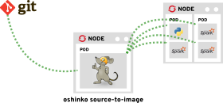

Building Apache Spark cloud services in Python
Michael McCune
msm@redhat.com
elmiko.github.io
msm@redhat.com
elmiko.github.io
Apache Spark

#devconfus
The fundamental Spark abstraction
Resilient distributed dataset (RDD)
are
partitioned,
lazy,
and immutable
homogenous collections
#devconfus
Resilient distributed datasets in action


#devconfus
simple.py
import sys
from pyspark.sql import SparkSession
spark = SparkSession.builder.appName("simple").getOrCreate()
data = range(int(sys.argv[1]))
evens = spark.sparkContext \
.parallelize(data) \
.filter(lambda x: x%2 == 0) \
.count()
print("Out of 0-{} there are {} even numbers."
.format(sys.argv[1], evens))
#devconfus

#devconfus
Hello World of Spark
def produce_pi(scale):
spark = SparkSession.builder.appName("PythonPi")\
.getOrCreate()
n = 100000 * scale
def f(_):
from random import random
x = random()
y = random()
return 1 if x ** 2 + y ** 2 <= 1 else 0
count = spark.sparkContext \
.parallelize(xrange(1, n + 1), scale) \
.map(f) \
.reduce(lambda x, y: x + y)
spark.stop()
pi = 4.0 * count / n
return pi
#devconfus
Embedded in an HTTP server
@app.route("/sparkpi")
def sparkpi():
scale = int(request.args.get('scale', 2))
pi = produce_pi(scale)
response = "Pi is roughly {}".format(pi)
return response#devconfus
Continuous model generation
while True:
cursor.execute("SELECT * FROM ratings")
current_ratings_length = cursor.rowcount
if current_ratings_length != ratings_length:
ratings_length = current_ratings_length
ratings = cursor.fetchall()
ratingsRDD = sc.parallelize(ratings)
ratingsRDD = ratingsRDD.map(
lambda x: (x[0], x[1], x[2]))
model_version += 1
logger.info("model version={}".format(model_version))
model = modeller.Trainer(data=ratingsRDD,
rank=parameters['rank'],
iterations=parameters['iteration'],
lambda_ = parameters['lambda'],
seed=42).train()
writer.write(model=model, version=model_version)
else:
time.sleep(120)#devconfus
Structured stream processing
spark = SparkSession.builder.appName("grafzahl").getOrCreate()
spark \
.readStream \
.format("kafka") \
.option("kafka.bootstrap.servers", servers) \
.option("subscribe", topic) \
.load() \
.selectExpr("CAST(value AS STRING)") \
.groupBy("value") \
.count() \
.writeStream \
.outputMode("complete") \
.format("memory") \
.queryName("results") \
.start()#devconfus
Structured stream processing
def top_results(request):
results = spark.sql(
"SELECT * FROM results ORDER BY count DESC LIMIT {}" \
.format(int(request.args.get('n') or 10))) \
.collect()
return (map(lambda x: x.value, results),
map(lambda x: x['count'], results))#devconfus
Kappa counter
spark = SparkSession.builder.appName("kappagraf").getOrCreate()
spark \
.readStream \
.format("kafka") \
.option("kafka.bootstrap.servers", servers) \
.option("subscribe", intopic) \
.load() \
.selectExpr("CAST(value AS STRING)") \
.groupBy("value") \
.count() \
.writeStream \
.format('kafka') \
.option('kafka.bootstrap.servers', servers) \
.option('topic', outtopic) \
.option('checkpointLocation', '/tmp') \
.start()#devconfus
oshinko in action
#devconfus
Synchronicity


#devconfus
Main control
import multiprocessing as mp
# queues for ipc with the prediction process
request_q = mp.Queue()
response_q = mp.Queue()
# start the prediction process
process = mp.Process(target=predictions.loop,
args=(request_q, response_q)
process.start()
# waiting for processing loop to become active
response_q.get()#devconfus
Processing loop
def loop(request_q, response_q):
spark = pysql.SparkSession.builder.appName("JiminyRec")\
.getOrCreate()
sc = spark.sparkContext
# let the main process know we are ready to start
response_q.put('ready')
while True:
req = request_q.get()
if req == 'stop':
break
resp = req
if 'topk' in req:
# make rank predictions
# ...
response_q.put(resp)
else:
# make rating predictions
# ...
response_q.put(resp)#devconfus
Mind your dependencies
import sys
import pymongo
from pyspark.sql import SparkSession
def filter_evens(value):
if value % 2 == 0:
db = pymongo.MongoClient().evens
doc = db.counts.find_one({"value": value})
if doc is not None:
count = doc["count"] + 1
db.counts.replace_one({"_id": doc["_id"]},
{"value": value, "count": count})
else:
db.counts.insert_one({"value": value, "count": 1})
spark = SparkSession.builder.appName("simple").getOrCreate()
data = range(int(sys.argv[1]))
evens = spark.sparkContext.parallelize(data)\
.filter(filter_evens)\
.count() #devconfus


msm@redhat.com
elmiko.github.io
radanalytics.io
#devconfus